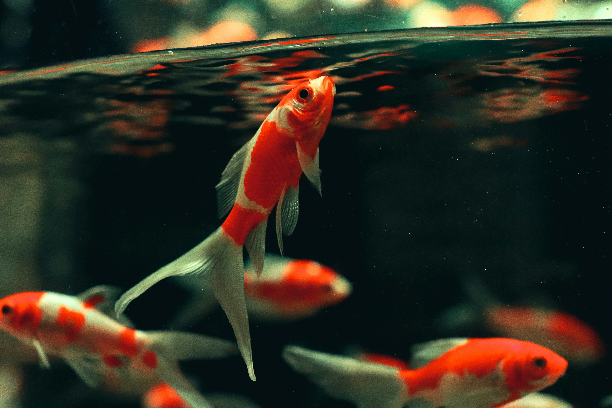
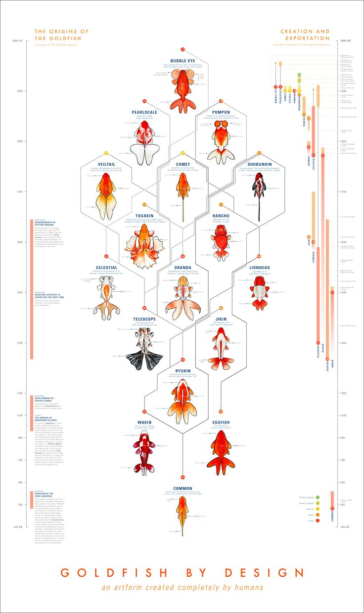
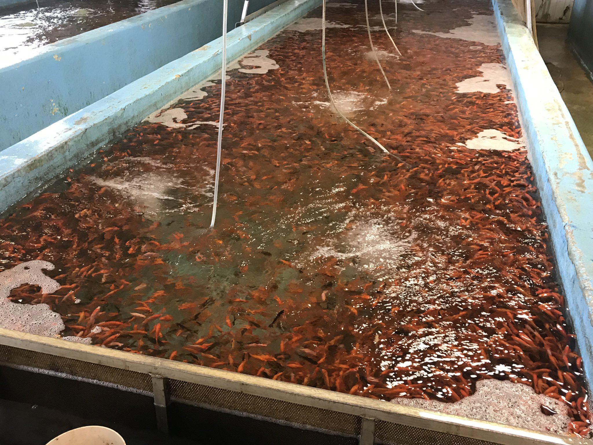

Various species of carp (collectively known as Asian carp) have been bred and reared as food fish for
thousands of years in East Asia. Some of these normally gray or silver species have a tendency to
produce red, orange, or yellow color mutations; this was first recorded in Imperial China, during
the
Jin dynasty.
During the Tang dynasty (AD 618-907), it was popular to raise carp in ornamental ponds and water
gardens. A natural genetic mutation produced gold (actually yellowish orange) rather than silver
coloration. People began to selectively breed the gold variety instead of the silver variety,
keeping
them in ponds or other bodies of water. On special occasions at which guests were expected, they
would
be moved to a much smaller container for display.
By the Song dynasty (AD 960-1279), the selective domestic breeding of goldfish was firmly
established. In 1162, the empress of the Song dynasty ordered the construction of a pond to collect
the red and gold variety. By this time, people outside the imperial family were forbidden to keep
goldfish of the gold (yellow) variety, yellow being the imperial color. The occurrence of other
colors
(apart from red and gold) was first recorded in 1276.
During the Ming dynasty (1368-1644), goldfish also began to be raised indoors, which permitted
selection for mutations that would not be able to survive in ponds. The first occurrence of -tailed
goldfish was recorded in the Ming dynasty. In 1603, goldfish were introduced to Japan. In 1611,
goldfish were introduced to Portugal and from there to other parts of Europe.
During the 1620s, goldfish were highly regarded in southern Europe because of their metallic scales,
and
symbolized good luck and fortune. It became a tradition for married men to give their wives a
goldfish
on their first anniversary, as a symbol for the prosperous years to come. This tradition quickly
died,
as goldfish became more available, losing their status. Goldfish were first introduced to North
America
around 1850 and quickly became popular in the United States.
Biology

A Common Goldfish
Size
Wild goldfish typically grow to between 4.7 inches (12 cm) and 8.7 inches (22 cm) but can reach 16
inches (41 cm). When kept in small indoor aquariums, goldfish tend to stay about 1 inch (2.5 cm)
to 2 inches (5.1 cm) long. Goldfish may grow larger if moved to bigger fish tanks,
but they usually do not grow longer than 6 inches (15 cm).
As of April 2008, the largest goldfish in the world was believed by the BBC to measure 19 inches (48
cm), in the Netherlands.At the time, a goldfish named "Goldie", kept as a pet in a tank in
Folkestone, England, was measured as 15 inches (38 cm) and over 2 pounds (0.91 kg), and named as the
second largest in the world behind the Netherlands fish. The secretary of the Federation of
British Aquatic Societies (FBAS) stated of Goldie's size, "I would think there are probably a few
bigger goldfish that people don't think of as record holders, perhaps in ornamental lakes". In
July 2010, a goldfish measuring 16 inches (41 cm) and 5 pounds (2.3 kg) was caught in a pond in
Poole, England, thought to have been abandoned there after outgrowing a tank. On November 16,
2020, a 15-inch (38 cm) goldfish weighing 9 pounds (4.1 kg) was found in a 16 acres (6.5 ha) lake in
Greenville, South Carolina, while conducting a population survey of Oak Grove Lake.
Vision
As a domestic fish, thus an easily accessible model organism, goldfish have one of the most studied
senses of vision in fishes. Goldfish have four kinds of cone cells, which are respectively sensitive
to different colors: red, green, blue and ultraviolet. The ability to distinguish between four different
primary colors classifies them as tetrachromats.
Goldfish do not have eyelids. This means they cannot close their eyes and sleep. Goldfish require 8 to 12
hours of total darkness. Setting a light period schedule for manual lighting and a timer for automatic
lights ensures your goldfish get a light and dark cycle. When the light starts to diminish, goldfish
start to see luminance, just like humans.
Once the environment falls dark, the goldfish will start to cease activity, and this is how they rest.
You will notice their eyes will dart around and stare at you, this is normal and helps them keep an eye
out for predators. Pond goldfish getting natural light and dark cycle have better eyesight than goldfish
exposed to artificial light for longer periods. Although their eyesight is poor in darkness, they use
their lateral line and smell to understand what is happening in the aquarium while they rest.
Human eyes can see shades of red, blue, and yellow. Unlike humans, goldfish can see ultra-violet and
infra-red lights, which makes them sensitive to polarized lighting occurring at dusk or dawn. Goldfish
see the reflected light off the scales of neighboring fish, it helps them to detect each other and spot
potential prey or predators, and avoid unwanted reflections under the water.
With such complex vision, goldfish can see a combination of red, green, blue, and ultraviolet light.
Hearing
Goldfish have one of the most studied senses of hearing in fish. They have two otoliths, permitting
the detection of sound particle motion, and Weberian ossicles connecting the swimbladder to the
otoliths, facilitating the detection of sound pressure.
Goldfish do not hear sounds the way humans do. Goldfish have a different hearing range than we do. They
are only able to hear low-frequency sounds and can hear in a sound range between 50Hz and 3000Hz.
whereas we hear in a sound range between 20Hz to 20,000Hz. This means goldfish can hear sounds
accompanied by vibrations, such as tapping on the glass but they will not be able to hear high-pitched
sounds such as whistling.
Classification

Goldfish Types
Western
As with many other examples of animal, selective breeding of Goldfish over centuries has produced several
color variations, some of them far removed from the "golden" color of the original fish. There are also
different body shapes, and fin and eye configurations. Some extreme versions of the goldfish live only
in aquariums—they are much less hardy than varieties closer to the "wild" original. However, some
variations are hardier, such as the Shubunkin. Currently, there are about 300 breeds recognized in
China. The vast majority of goldfish breeds today originated from China
Chinese
Chinese tradition classifies goldfish into four main types. These classifications are not commonly
used in the West.
Crucian (also called "grass") — Goldfish without anatomical features, similar to Crucian carp or
grass carp except for their coloration. These include the common goldfish, comet goldfish and
Shubunkin.
Wen — Goldfish having a tail, e.g., Fantails and Veiltails ("Wen" is also the name of the
characteristic headgrowth on such strains as Oranda and Lionhead)
Dragon Eye — Goldfish having extended eyes, e.g., Black Moor, Bubble Eye, and Telescope Eye
Egg — Goldfish having no dorsal fin, usually with an 'egg-shaped' body, e.g., Lionhead. This group
includes a Bubble Eye without a dorsal fin.
Cultivation

Goldfish Farm
In Aquarium
Like most species in the carp family, goldfish produce a large amount of waste both in their feces and
through their gills, releasing harmful chemicals into the water. Build-up of this waste to toxic levels
can occur in a relatively short period of time, and can easily cause a goldfish's death. For common and
comet varieties, each goldfish should have about 20 US gallons (76 L; 17 imp gal) of water. Goldfish
(which are smaller) should have about 10 US gallons (38 L; 8.3 imp gal) per goldfish. The water surface
area determines how much oxygen diffuses and dissolves into the water. A general rule is have 1 square
foot (0.093 m2). Active aeration by way of a water pump, filter or fountain effectively increases the
surface area.
The goldfish is classified as a coldwater fish, and can live in unheated aquaria at a temperature
comfortable for humans. However, rapid changes in temperature (for example in an office building in
winter when the heat is turned off at night) can kill them, especially if the tank is small. Care must
also be taken when adding water, as the new water may be of a different temperature. Temperatures under
about 10 °C (50 °F) are dangerous to varieties, though commons and comets can survive slightly lower
temperatures. Extremely high temperatures (over 30 °C (86 °F)) can also harm goldfish. However, higher
temperatures may help fight protozoan infestations by accelerating the parasite's life-cycle—thus
eliminating it more quickly. The optimum temperature for goldfish is between 20 °C (68 °F) and 22 °C (72
°F).
Like all fish, goldfish do not like to be petted. In fact, touching a goldfish can endanger its health,
because it can cause the protective slime coat to be damaged or removed, exposing the fish's skin to
infection from bacteria or water-born parasites. However, goldfish respond to people by surfacing at
feeding time, and can be trained or acclimated to taking pellets or flakes from human fingers. The
reputation of goldfish dying quickly is often due to poor care.
In Ponds
Goldfish are popular pond fish, since they are small, inexpensive, colorful and very hardy. In an outdoor
pond or water garden, they may even survive for brief periods if ice forms on the surface, as long as
there is enough oxygen remaining in the water and the pond does not freeze solid. Common, London and
Bristol shubunkins, jikin, wakin, comet and some hardier fantail goldfish can be kept in a pond all year
round in temperate and subtropical climates. Moor, veiltail, oranda and lionhead can be kept safely in
outdoor ponds year-round only in more tropical climates and only in summer elsewhere.
Compatible fish include rudd, tench, orfe and koi, but the last require specialized care. Ramshorn
snails are helpful by eating any algae that grows in the pond. Without some form of animal population
control, goldfish ponds can easily become overstocked. Fish such as orfe consume goldfish eggs.
Ponds small and large are fine in warmer areas (although it ought to be noted that goldfish can
"overheat" in small volumes of water in the summer in tropical climates). In frosty climes, the depth
should be at least 80 centimeters (31 in) to preclude freezing. During winter, goldfish become sluggish,
stop eating and often stay on the bottom of the pond. This is normal; they become active again in the
spring. Unless the pond is large enough to maintain its own ecosystem without interference from humans,
a filter is important to clear waste and keep the pond clean. Plants are essential as they act as part
of the filtration system, as well as a food source for the fish. Plants are further beneficial since
they raise oxygen levels in the water.
Like their wild ancestors, common and comet goldfish as well as shubunkin can survive, and even thrive,
in any climate that can support a pond, whereas goldfish are unlikely to survive in the wild as their
bright colors and long fins make them easy prey.
Feeding
In the wild, the diet of goldfish consists of crustaceans, insects, and various plant matter. Like most
fish, they are opportunistic feeders and do not stop eating on their own accord. Overfeeding can be
deleterious to their health, typically by blocking the intestines. This happens most often with
selectively bred goldfish, which have a convoluted intestinal tract. When excess food is available, they
produce more waste and feces, partly due to incomplete protein digestion. Overfeeding can sometimes be
diagnosed by observing feces trailing from the fish's cloaca.
Goldfish-specific food has less protein and more carbohydrate than conventional fish food. Enthusiasts
may supplement this diet with shelled peas (with outer skins removed), blanched green leafy vegetables,
and bloodworms. Young goldfish benefit from the addition of brine shrimp to their diet. As with all
animals, goldfish preferences vary.